1. Phân tích mã cổ phiếu
1. Vai trò gân Achilles
2. Tìm hiểu về cung tên
3. Dây neo tàu thuyền
4. Tại sao gạch có thể chặt làm đôi dễ dàng
5. Nguyên nhân bóng bay dễ dàng nổ tung?
6. Nguyên nhân người già dễ té ngã?
7. Tại sao phần đùi luôn to hơn phần cẳng chân
8. Tại sao phụ nữ có giọng thanh & cao
9. Tại sao các bình khí có cấu tạo hình trụ dài
10. Tại sao cánh dơi phình ra khi bay
11. Tìm hiểu lông vũ ở các loài chim
12. Tại sao người lớn tuổi hay gặp các bệnh cột sống
1. Chuẩn bị
1.1. Cài đặt Selenium
Selenium được hiểu là một công cụ kiểm duyệt phần mềm hay duyệt web tự động (Automations test tools). Trong phạm vi bài viết này, mình sẽ sử dụng nó để truy cập trang web cafef một cách tự động và lấy dữ liệu
Selenium hiện hỗ trợ ngôn ngữ lập trình python. Bạn có thể cài đặt nó trên terminal thông qua trình quản lý thư viện Pip (Preferred Installer Program), cú pháp để cài đặt trên terminal
pip3 install selenium (pip3 đối với các máy đang chạy phiên bản python 3)
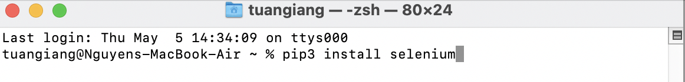1.2. Cài đặt webdrive
WebDriver là một công cụ mã nguồn mở trong mảng test tự động, cho phép các ứng dụng web có thể hoạt động trên các trình duyệt khác nhau. Nó giúp các thao tác trên web thực hiện 1 cách tự động như tự động đi đến các địa chỉ web, click, input, chạy code
Tuỳ thuộc vào trình duyệt web đang sử dụng bạn sẽ phải cài webDrive khác nhau, ví dụ với trình duyệt Chrome là ChromeDrive, Firefox là GeckoDrive
Cách chạy webDrive
Cần biết được đường dẫn chính xác webDrive chạy, ví dụ đối với safari đường dẫn sẽ là
executable_path='/usr/bin/safaridriver'
Cùng thử 1 đoạn code sử dụng webDrive của Firefox là GeckoDrive để vào trang Google tự động, sau khi chạy code trình duyệt FF sẽ tự khởi động và vào Google
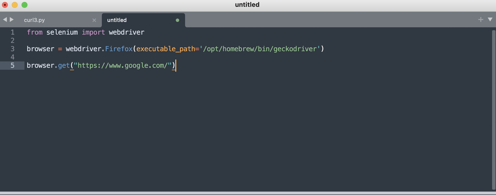1.3. Danh sách các mã cổ phiếu
Theo thống kê trên trang cafef (link http://s.cafef.vn/du-lieu-doanh-nghiep.chn) có khoảng 2677 mã cổ phiếu đã niêm yết
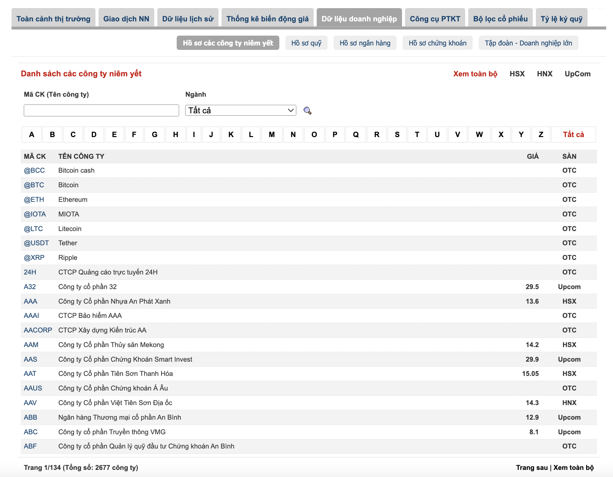Việc cần làm là truy cập vào đường link, sau đó copy toàn bộ mã cổ phiếu về và đặt trong 1 file text, các mã trong file text được phân cách bằng ký tự xuống dòng
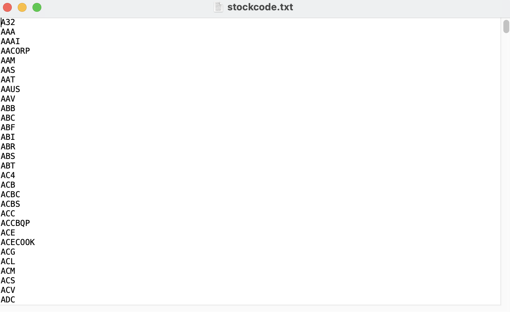2. Lấy dữ liệu thô từ trang cafef
2.1. Phân tích cấu trúc nội dung trên trang cafef
Về ý tưởng, mình sẽ sử dụng Selenium webdrive để tự động các bước truy cập vào trang cafef sau đó lấy dữ liệu về, để thực hiện, đầu tiên cần phân tích cấu trúc nội dung hiển thị của trang
Phân tích đường link truy cập
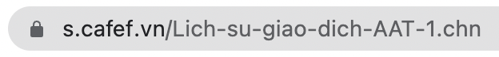Để ý trong đường link truy cập hình trên có mã AAT, nếu muốn hiển thị mã AAA chỉ cần thay AAT bằng AAA là có thể truy cập
Khi đã có danh sách mã cổ phiếu từ trang, việc tự động nhập mã cổ phiếu vào đường link để lấy dữ liệu về có thể được lập trình 1 cách tự động
Phân tích ngày hiển thị
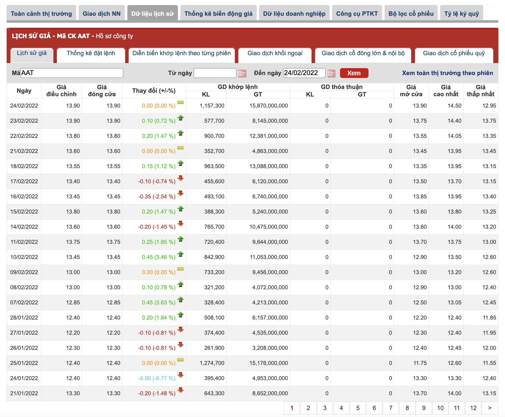Giá cổ phiếu sẽ được hiển thị trong bảng như hình trên, bảng này sẽ chứa thông tin về giá trong 20 ngày. Ngày đầu tiên trong bảng sẽ là ngày hiện hành, hoặc bạn có thể input ngày này vào ô 'Đến ngày', lúc này trang sẽ hiển thị nội dung 20 ngày trước đó đến ngày nhập trong ô 'Đến ngày'
2.2. Phân tích ngôn ngữ hiển thị của trang (HTML)
Khi đã hiểu được cấu trúc hiển thị của trang, việc tiếp theo cần làm là lấy được nội dung hiển thị này về dưới dạng text. Điều này cần một chút hiểu biết về ngôn ngữ hiển thị 1 trang webNgôn ngữ hiển thị 1 trang web
Hầu hết các website đều được xây dựng trên 3 ngôn ngữ HTML, CSS và Javascript. HTML và CSS chịu trách nhiệm cho phần hiển thị của trang web, cụ thể HTML xử lý phần nội dung, CSS liên quan đến trang trí còn Javascript là phần xử lý sau của 1 trang web, ví dụ khi bạn nhập email vào web lúc này Javascript sẽ kiểm tra xem email bạn nhập có đúng cú pháp không và đưa ra cảnh báo
Hiểu đơn giản, nếu xem website như 1 ngôi nhà có nhiều phòng, thì HTML có thể hiểu là phần thô của ngôi nhà, CSS là màu sơn, giấy dán tường, hoạ tiết... Còn Javascript sẽ thực hiện chức năng của ngôi nhà ví dụ như hệ thống cửa tự động, kiểm tra vân tay, nhiệt độ, chuông báo động...
Mục tiêu của bài viết là lấy 1 phần nội dung hiển thị trên trang về phân tích, cụ thể là giá của 1 mã cổ phiếu nào đó nằm trong bảng, và điều đó liên quan đến HTML. Nếu trong 1 ngôi nhà, để lấy được 1 món đồ nào đó, bạn cần biết chính xác vị trị đặt nó, thì trong HTML vị trí đó được hiểu là ID, để biết được ID tiến hành nhấp chuột phải vào mảng nội dung cần lấy và chọn page source, trong page source sẽ nhìn thấy phần ID này 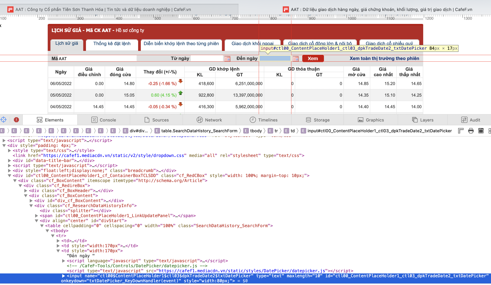Ví dụ trong phần input trong mục Đến ngày có ID như hình trên
Dựa vào phân tích cấu trúc hiển thị trang ở mục 2.1 sẽ có 2 phần ID cần quan tâm để có thể lập trình tự động lấy dữ liệu về là phần input trong mục 'Đến ngày' và mục nhấn 'Xem'
2.3. Phần code để lấy nội dung
Khi đã chuẩn bị đầy đủ 1 danh sách đầy đủ các mã cổ phiếu trong một file text (stockcode.txt), thiết lập môi trường cho phần chạy code, cũng như phân tích phân tích được cấu trúc trang web, việc chạy code để lấy dữ liệu sẽ được tiến hành
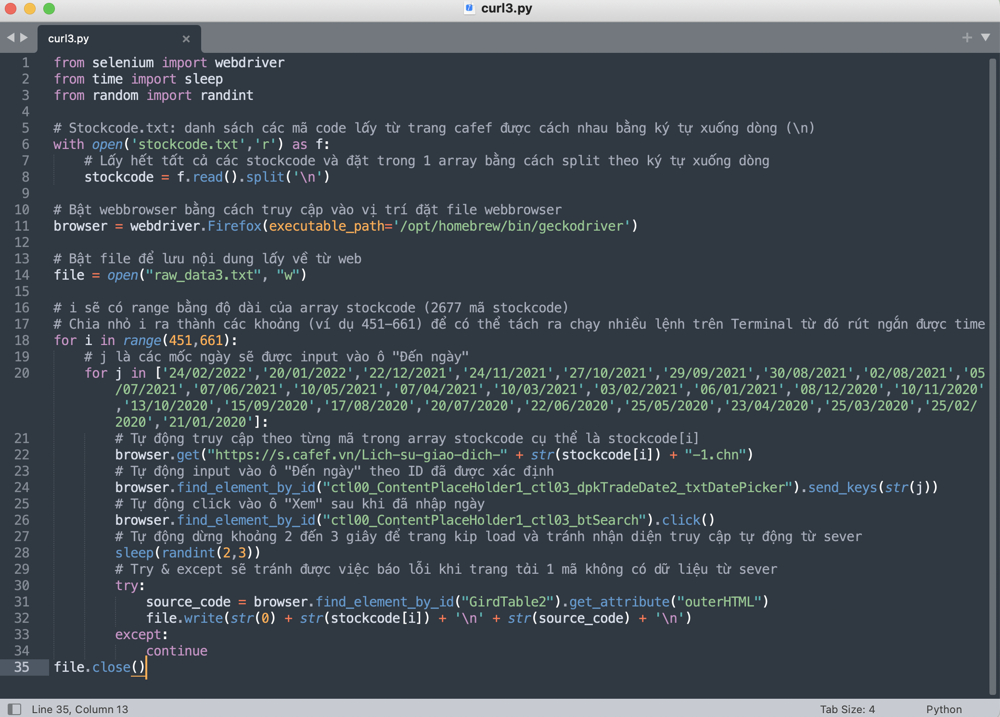Để rút ngắn thời gian chạy code, khoảng 2677 mã cổ phiếu sẽ được chia nhỏ ra và chạy song song trên terminal, toàn bộ các nội dung lấy được từ trang sẽ được lưu trong file raw_dataX
3. Làm sạch dữ liệu thô
3.1 Phân tích phần nội dung lấy về từ web
Nội dung lấy về là phần HTML gồm nhiều tag (
Các tag sẽ chiếm hơn 90% nội dung lấy về, chúng cần được loại bỏ bằng các đoạn code. Ngoài ra, sẽ có 1 số nội dung không liên quan cũng cần được loại bỏ
Một vấn đề phát sinh trong file raw_dataX lấy về là luôn tồn tại 1 tag < tr (chi tiết trong phần tô xanh hình dưới), phần tag này chưa có ký tự đóng '>'. Nguyên tắc của xử lý dữ liệu là tất cả nội dung cần phải đồng bộ về cấu trúc thì mới có thể xử lý (thêm, bớt, sửa, xoá) đồng bộ, hiểu trong trường hợp này là các tag trong file raw_dataX phải cùng đặt trong < x>, do đó tag < tr cần được thêm '>' để trở thành < tr>
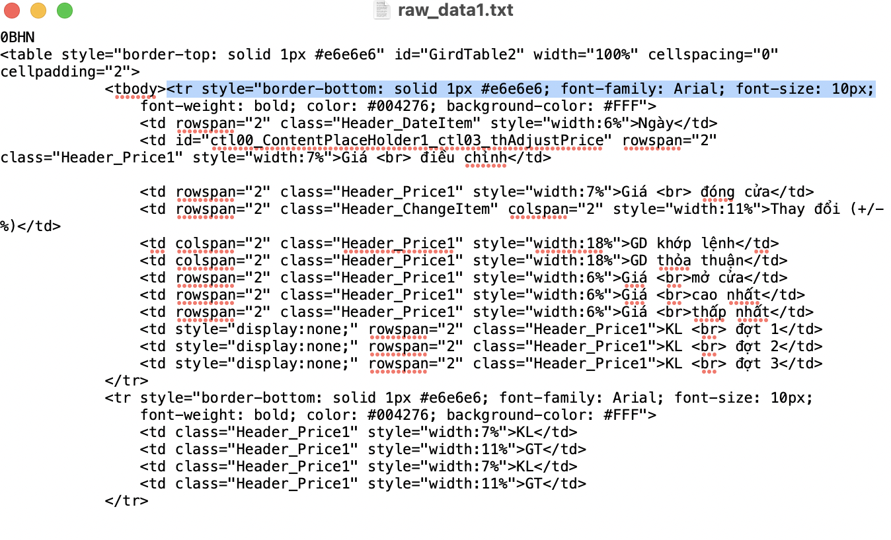3.2. Phần code làm sạch dữ liệu thô
Tiến hành code để loại bỏ các tag và nội dung không cần thiết
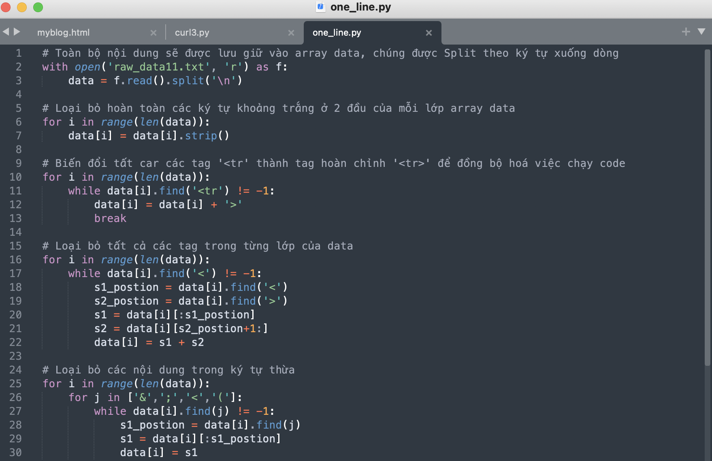 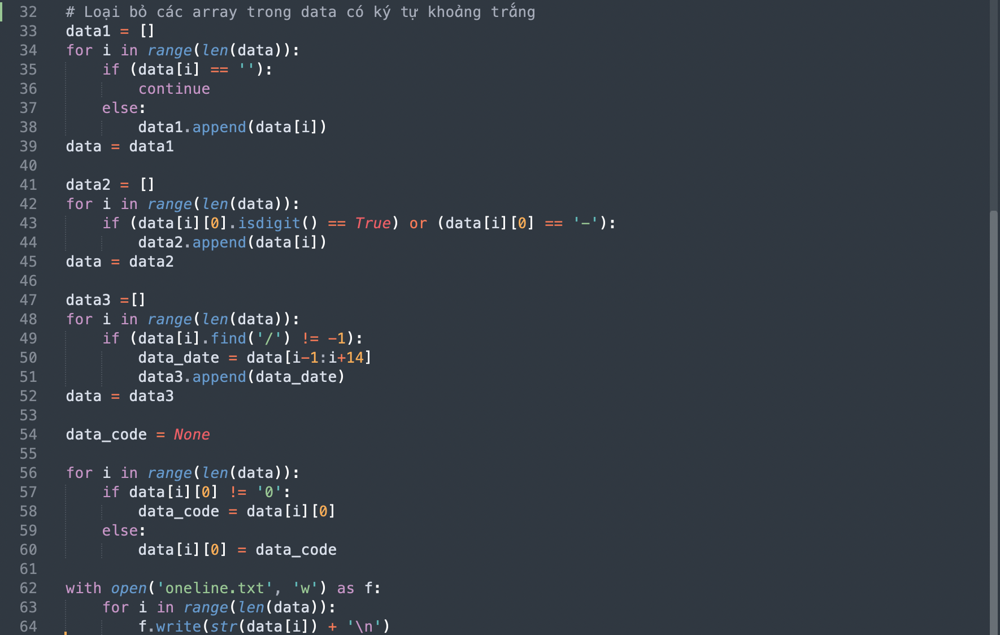Sau khi chạy đoạn code trên, toàn bộ dữ liệu thô đã được làm sạch và lưu vào 1 file txt. Mỗi dòng trong file này là thông tin của 1 mã cổ phiếu theo một ngày bất kỳ
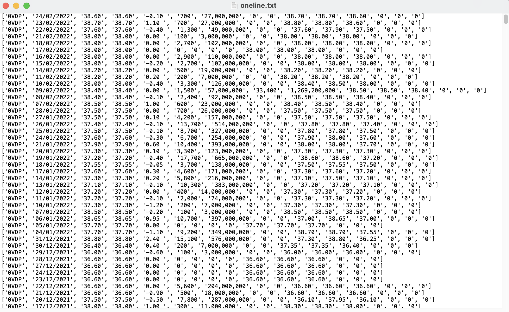4. Lọc dữ liệu
4.1. Import các file text đã được làm sạch
Thực hiện đoạn code sau để import tất cả các file txt vào array stocks
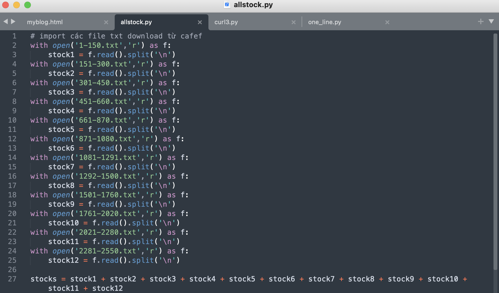4.2. Loại bỏ các dữ liệu bị trùng hoặc không cần thiết
Tiếp tục tiến hành code để lọc ra các dữ liệu bị trùng lặp, và chỉ giữ lại các giá trị cần thiết cho phân tích. Sau khi lọc xong, toàn bộ các dữ liệu sẽ được ghi vào 1 file text mới
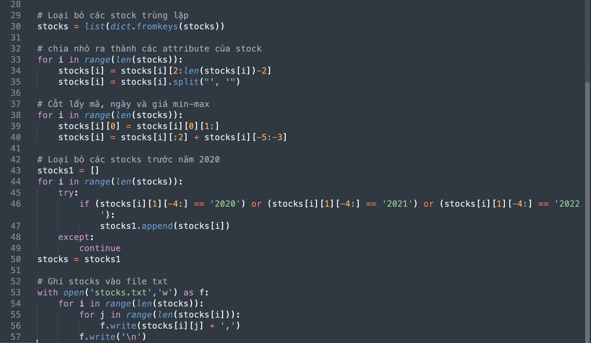Sau quá trình làm sạch và loại bỏ các dữ liệu không cần thiết, dữ liệu lúc này trong file text hiển thị sẽ chỉ còn chứa mã, ngày, giá min & max
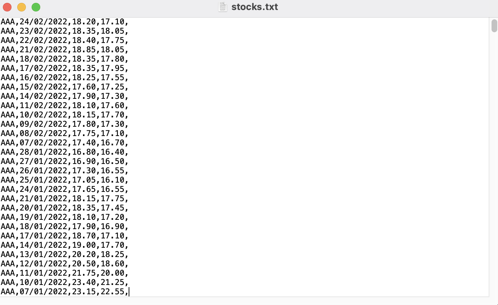5. Vẽ biểu đồ
Tiến hành vẽ linechart cho toàn bộ thông tin về các mã cổ cổ phiếu theo ngày với các chỉ số giá min & max từ file text, công việc này sẽ được thực hiện bằng đoạn code sau
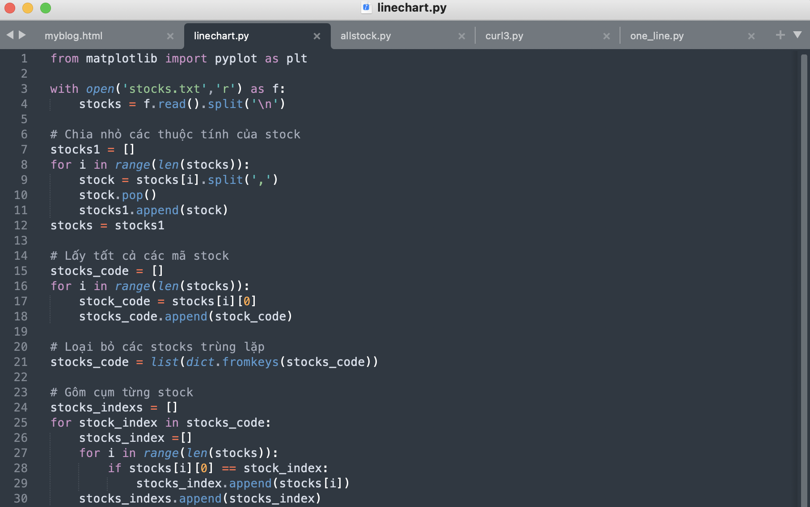 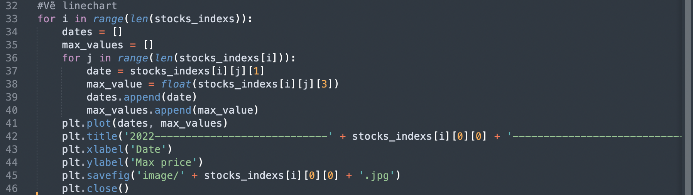
Các linechart thu được sau khi tiến hành chạy code, chúng được lưu thành các file riêng lẻ trongg thư mục được chỉ định
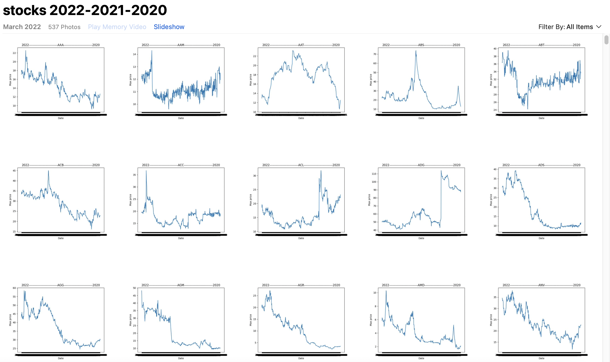